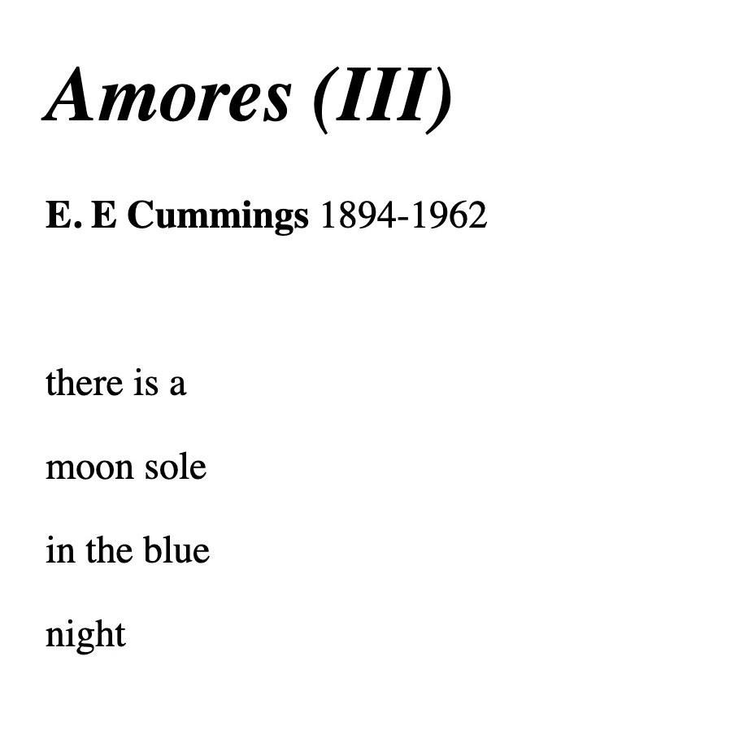
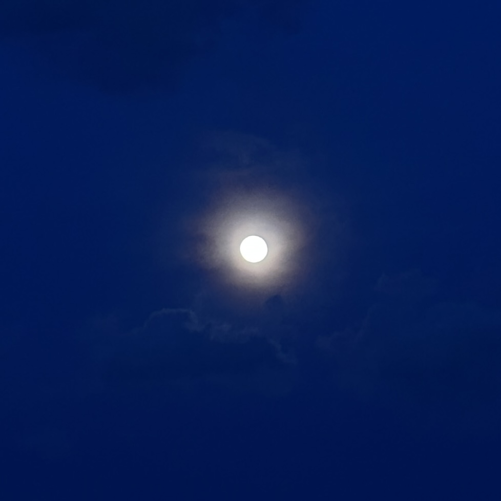
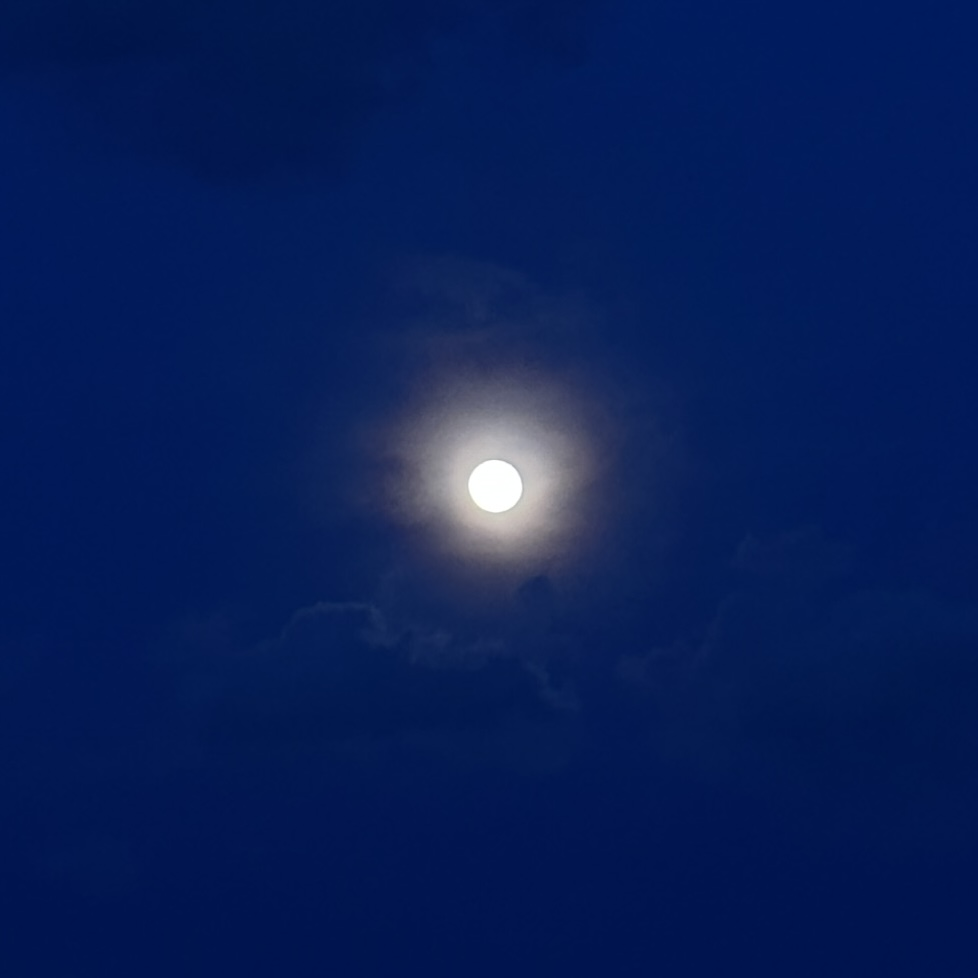
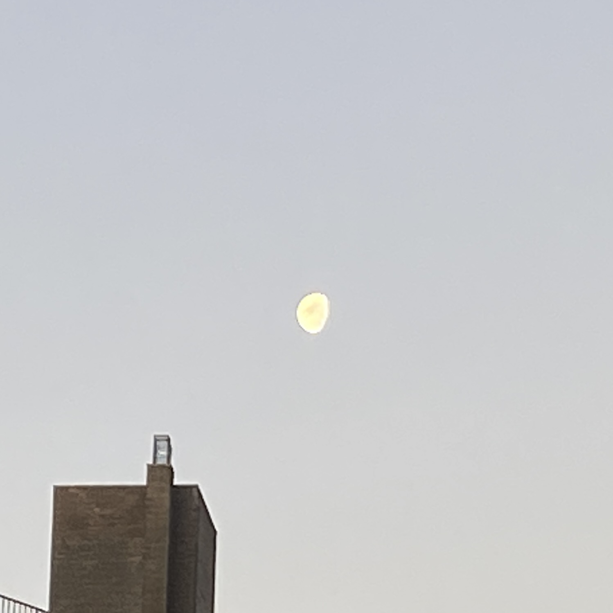
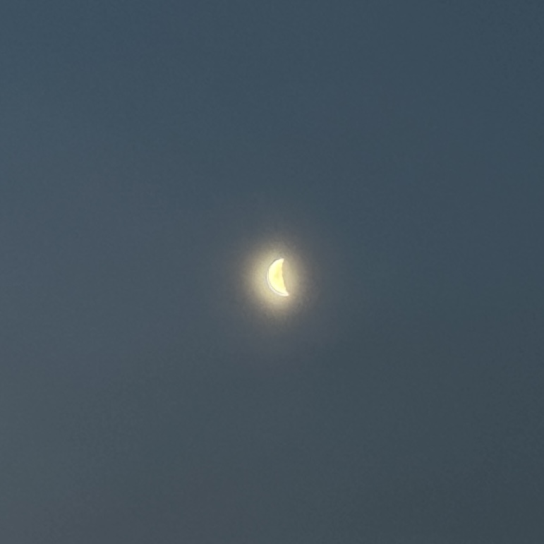
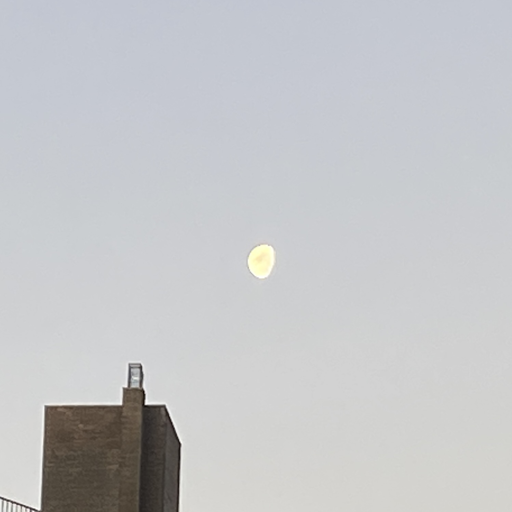
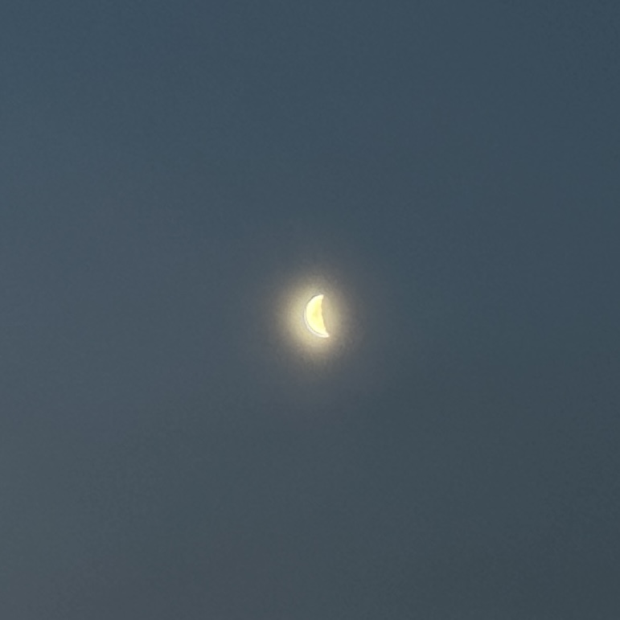
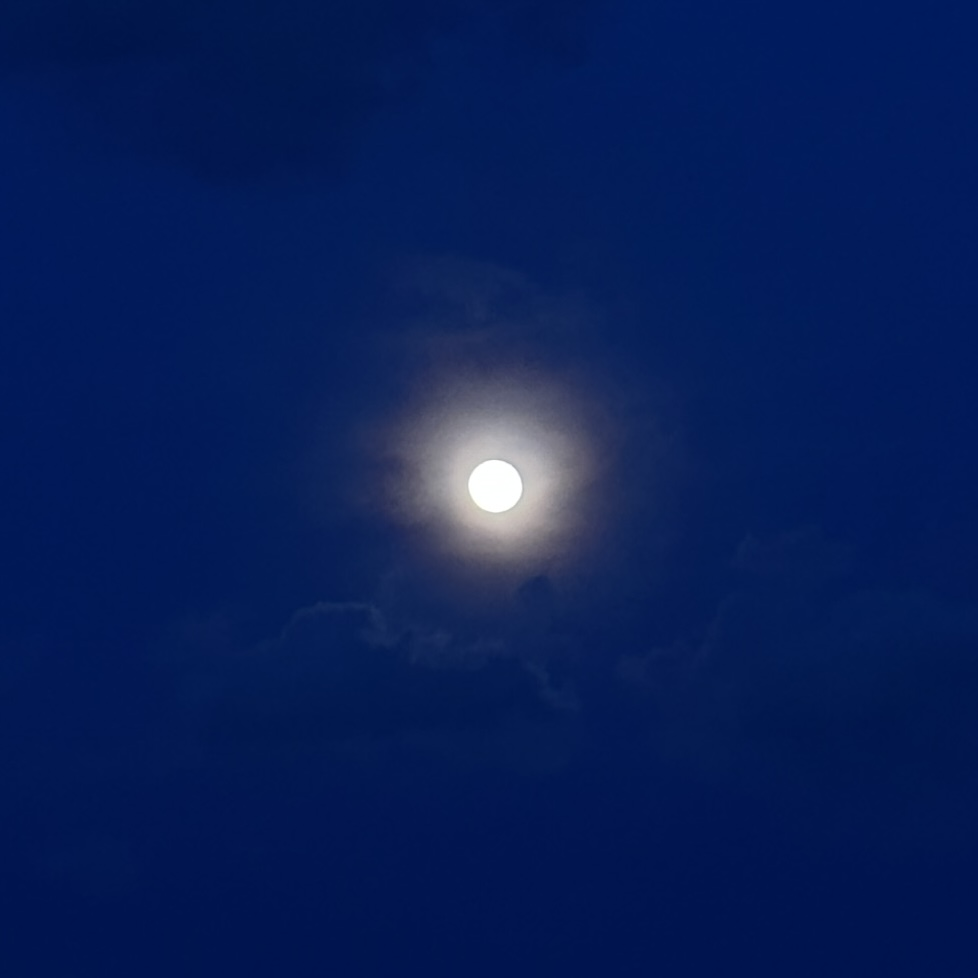
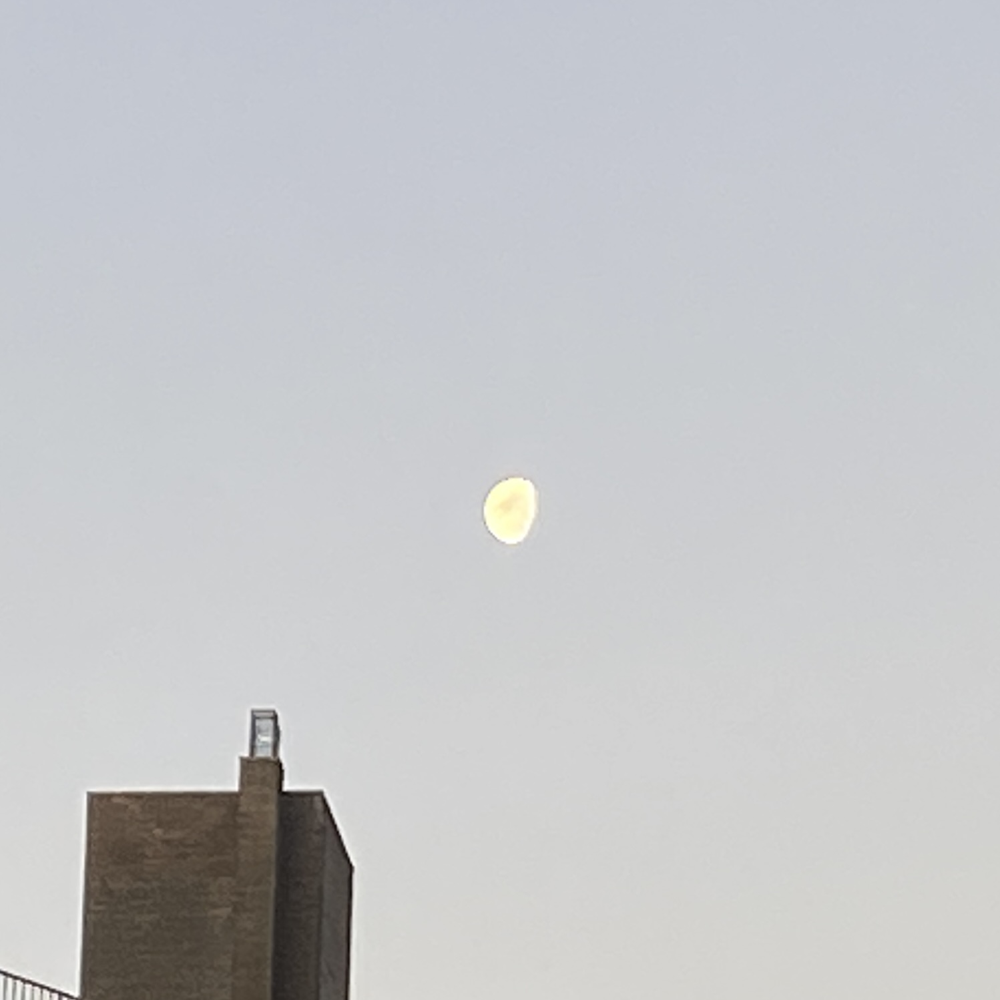
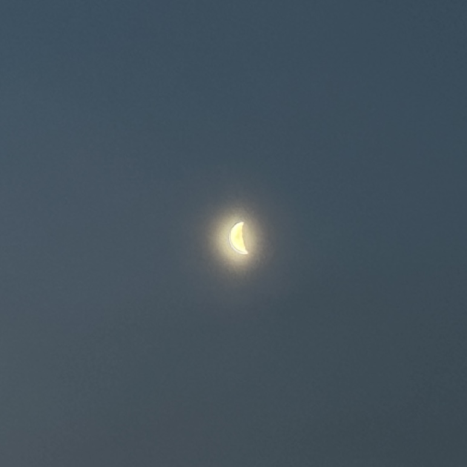

Focus:
Throughout the month of September, I documented each moon phase I saw in each retrospective week of the month.
My goal is to do research regarding the significance, historical context, and spiritual connotations
associated with each lunar phase. My fascination with the moon has motivated me to seek a deeper understanding.
If you share this curiosity and often find yourself capturing the moon through photographs but wish to
expand your knowledge, I invite you to join me on this 10-week exploration!



 

 





